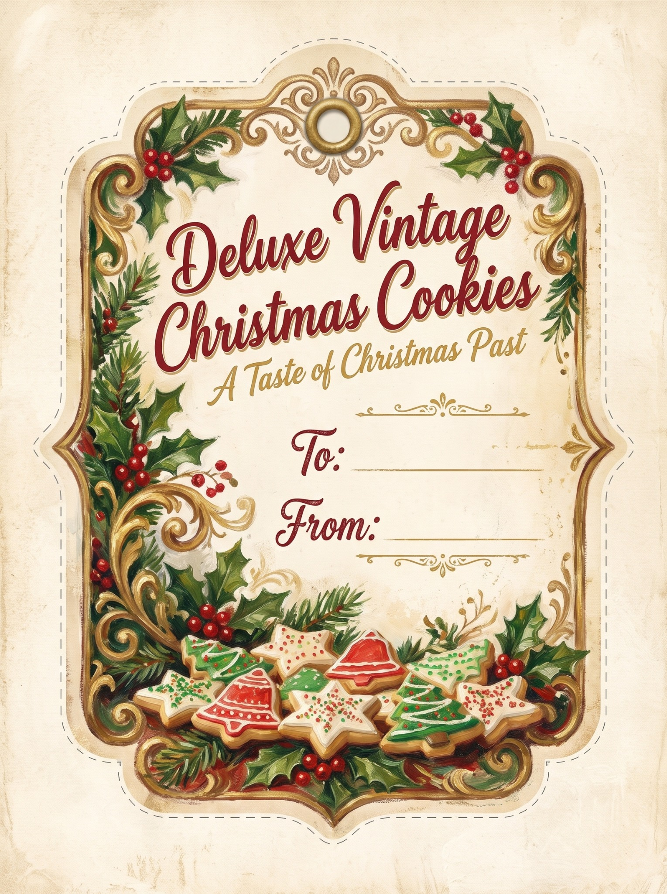

From our Christmas kitchen ✦ made especially for you
A Little Tag for Every Tin
Turn a plate of cookies into a keepsake. Make your own old-fashioned Christmas gift tags, ready to print and share.
The finishing touch
Make It Personal
Fill in your greeting, pick a vintage look, and watch the tag take shape. Prefer to write by hand? Choose the new Handwritten Keepsake option.
A peek at your creation
Your Gift Tag
✦ FROM OUR CHRISTMAS KITCHEN ✦
Christmas Wishes
ToSomeone special
FromOur Christmas kitchen

The printable sheet uses this design. Cut along the outer borders and attach the tags to your cookie tins or gift bags. The handwritten keepsake version prints as a blank fill-in tag.
Handmade Treats Deserve a Handmade Touch
A tag, a ribbon, and a few Christmas cookies can become someone's favorite holiday memory.
Back to the Christmas recipes →